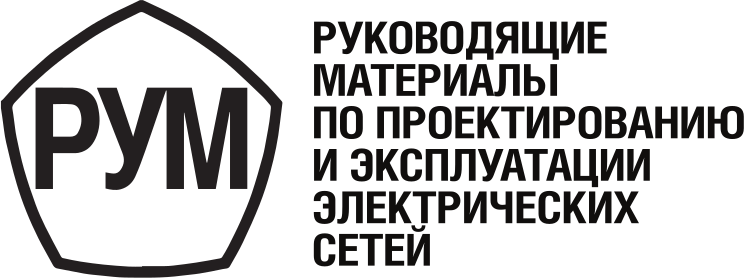
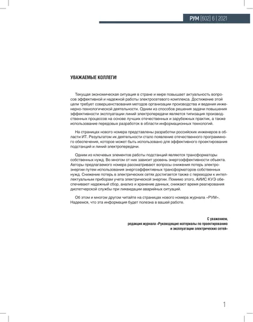

Руководящие материалы по проектированию и эксплуатации электрических сетей
Главная
О журнале
Архив
Новости
Авторам
Подписка
Контакты
Открытый архив
Выпуск № 6 / 2021
Выпуск № 6 / 2021

Выпуск № 6 / 2021
Год
2021
Номер
6
Статус доступа
Открытый архив
Скачать PDF
Вернуться в архив